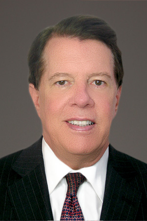

Who We Are
The founding partners of Macro Advisory are Chris Weafer and Vincent Gaughan who have a combined thirty-five years’ experience living and working in Russia and Central Asia. The link to full biographies for each are below
Christopher Weafer
Chris Weafer has worked in Russia for more than fifteen years. Most recently he was voted the best Russia investment strategist for 2013 by investors in separate polls carried out by Thomson Reuters Extel and Institutional Investor magazine.
Chris Weafer has been working as a strategist in Russia for over fifteen years. Chris was voted Russia's XXXXXX Strategist in the 2013 All-Russia Survey* conducted by Institutional Investor magazine and has been regularly voted in the top three of this survey and others carried out by such groups as Thomson Reuters Extel. His most recent position was Chief Strategist at Sberbank-CIB, Russia's largest bank and one of the biggest banks in Europe. Prior to that he served as Chief Strategist for Uralsib Bank and Alfa Bank, two of Russia's largest privately owned financial groups. His first role in Russia was as Head of Research with Troika Dialog from June 1998. Prior to coming to Russia Chris worked as Head of Research for NatWest Markets in Bangkok, Thailand, during the Asian financial crisis of 1997/'98. Before that he was Senior Investment Manager at the Abu Dhabi Investment Authority, one of the world's largestsovereign wealth funds, based in Abu Dhabi City. Chris started his investment career with the Irish Life Assurance Company in Dublin, Ireland and has accumulated over thirty three years of experience in emerging markets. Chris is the author of many published articles covering Russia, Central Asia and macro oil. He is also widely quoted in the financial press on these and related subjects. Chris is a native of Ireland.
Read more....
Chris Weafer has been working as a strategist in Russia for over fifteen years. Chris was voted Russia's XXXXXX Strategist in the 2013 All-Russia Survey* conducted by Institutional Investor magazine and has been regularly voted in the top three of this survey and others carried out by such groups as Thomson Reuters Extel. His most recent position was Chief Strategist at Sberbank-CIB, Russia's largest bank and one of the biggest banks in Europe. Prior to that he served as Chief Strategist for Uralsib Bank and Alfa Bank, two of Russia's largest privately owned financial groups. His first role in Russia was as Head of Research with Troika Dialog from June 1998. Prior to coming to Russia Chris worked as Head of Research for NatWest Markets in Bangkok, Thailand, during the Asian financial crisis of 1997/'98. Before that he was Senior Investment Manager at the Abu Dhabi Investment Authority, one of the world's largestsovereign wealth funds, based in Abu Dhabi City. Chris started his investment career with the Irish Life Assurance Company in Dublin, Ireland and has accumulated over thirty three years of experience in emerging markets. Chris is the author of many published articles covering Russia, Central Asia and macro oil. He is also widely quoted in the financial press on these and related subjects. Chris is a native of Ireland.
Hide
cw@macro-advisory.com

Vincent Gaughan
Vincent Gaughan began his career in Russia in 1993 when he was appointed attorney to a Committee of the Supreme Soviet of the Russian Federation. Since then he has helped a number of foreign companies do business in Russia and Central including most recently, representing Jack Nicklaus Design sell several bespoke gold courses in both Russia and Central Asia.
Vincent Gaughan began his career in Russia in 1993 when he was appointed the first and only American attorney to a Committee of the Supreme Soviet of the Russian Federation. As counsel to the Inter- Republic Trade Committee, Mr Gaughan assisted in the drafting of trade regulations among the newly Commonwealth of Independent States (CIS). Subsequently, Mr. Gaughan founded and was President of The Bering Group Ltd. The Bering Group acted as a liaison in the structuring and financing of various ventures between foreign companies and the Russian public and private sector.
The Bering Group was instrumental in the establishment of the first real time on-line national lottery in Russia, It secured the first private security license in Russia, issued by the Ministry of Internal Affairs, to Vance International, an American security company.The Bering Group also held marketing rights to the Russian Olympic Committee and logo from 1998 to 2006. More recently,Mr Gaughan has been representing the American golf legend, Jack Nicklaus in Eastern Europe, Russia and Central Asia in his golf course designing business. To date he has identified and successfully negotiated the contracts for the design of eight Nicklaus Signature golf courses in Russia and Central Asia.
Mr. Gaughan holds a B.S.B.A from Georgetown University, an MBA from Babson College and a J.D. from Fordham University Law School. He served as an Assistant District Attorney for Erie County, New York and worked as a licensed stockbroker for Merrill Lynch.
Read more....
Vincent Gaughan began his career in Russia in 1993 when he was appointed the first and only American attorney to a Committee of the Supreme Soviet of the Russian Federation. As counsel to the Inter- Republic Trade Committee, Mr Gaughan assisted in the drafting of trade regulations among the newly Commonwealth of Independent States (CIS). Subsequently, Mr. Gaughan founded and was President of The Bering Group Ltd. The Bering Group acted as a liaison in the structuring and financing of various ventures between foreign companies and the Russian public and private sector.
The Bering Group was instrumental in the establishment of the first real time on-line national lottery in Russia, It secured the first private security license in Russia, issued by the Ministry of Internal Affairs, to Vance International, an American security company.The Bering Group also held marketing rights to the Russian Olympic Committee and logo from 1998 to 2006. More recently,Mr Gaughan has been representing the American golf legend, Jack Nicklaus in Eastern Europe, Russia and Central Asia in his golf course designing business. To date he has identified and successfully negotiated the contracts for the design of eight Nicklaus Signature golf courses in Russia and Central Asia.
Mr. Gaughan holds a B.S.B.A from Georgetown University, an MBA from Babson College and a J.D. from Fordham University Law School. He served as an Assistant District Attorney for Erie County, New York and worked as a licensed stockbroker for Merrill Lynch.
Hide